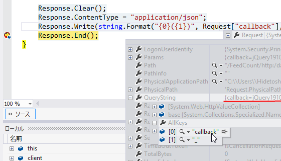

WebMatrix 3: JSON と JSONP
執筆日時：

- WebMatrix 3: フィードの購読者数を取得する（1：サーバーサイド編） - だるろぐ
- WebMatrix 3: フィードの購読者数を取得する（2: JavaScript 編） - だるろぐ
- WebMatrix 3: フィードの購読者数を取得する（3: CSS 編） - だるろぐ
一連の記事では、FeedCount の結果を JSON でやり取りしていました。
JSON
サーバーサイド
// ~/FeedCount.cshtmlResponse.Clear(); Response.ContentType = "application/json"; Response.Write(Json.Encode(data)); Response.End();
渡されるデータ（例）
{"livedoor":6,"total":6}
クライアントサイド
// ~/Script/SocialButtons.js$.ajax({ url: ’/FeedCount/‘ + url, dataType: 'json', success: function (json) { element.text(json.total || 0); } });
けれど、Twitter や Facebook における共有数は JSONP で処理していました。それに合わせて、FeedCount も JSONP で処理できないか？ と思ったのですが、$.ajax の dataType を ‘jsonp’ にするだけでは動きません。サーバーサイドにも手を加えなければならないみたい。
JSONP
どうやればいいのかよくわからないとつぶやいたところ、つもりんが教えてくれました。
要は、JSON そのままではなく JavaScript の関数にして（コールバック関数）送り返せばいいのですね。

問題はコールバックの関数の名前をどうするかですが、jQuery の場合、指定しなければ勝手に適当な名前を付けて GET[callback="***"] で送ってくるようです。というわけで、Request["callback"] とか Request.QueryStrings["callback"] で取得できますね。
サーバーサイド
// ~/FeedCount.cshtmlResponse.Clear(); Response.ContentType = "application/json"; Response.Write( // 変更 ! string.Format("{0}({1})", Request["callback"], Json.Encode(data)) ); Response.End();
渡されるデータ（例）
jQuery******({"livedoor":6,"total":6});
クライアントサイド
// ~/Script/SocialButtons.js$.ajax({ url: ’/FeedCount/‘ + url, dataType: 'jsonp', // <- 変更 ! success: function (json) { element.text(json.total || 0); } });
ちゃんと動くかな？
Request[“callback”] が空であれば JSON データで返すなど、改良の余地はあるかもしれない。